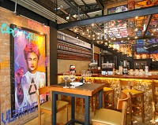
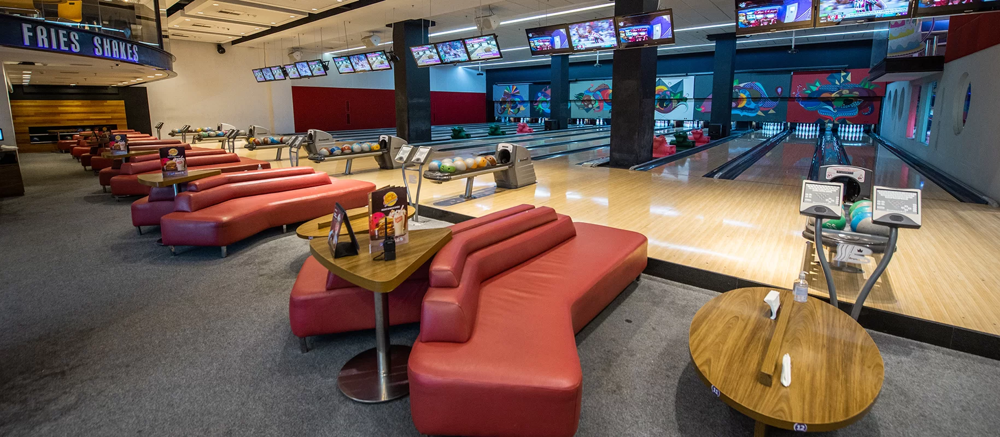

Rodizio de Risoto SP
Estamos falando do Rizz Restaurante, são 24 sabores de risotos, inclusive com 10 opções vegetarianas e cada mesa pode escolher 6 opções para comer à vontade!
A partir de R$79,90 com entradinha de aranchini incluso. Horário de funcionamento: terça a sexta: 18H30 as 23h30.
⭐ Avaliações da Web 5/5
📍 Alameda Iraé, 398 - Moema.

O bar mais descolado de São Paulo
O Venancio Restauante Bar , aqui você vai encontrar coquetéis autorais e gastronomia contemporânea. Alguns dos pratos e drinks:
Bruschetta de Jamon R$ 49,90 e Brie empanado R$ 93,90 bebidas Gin Royale R$ 44,89 e Cha Mitter R$39,98. Horários de funcionamento: 12h as 01h pode variar conforme o dia
⭐ Avaliações da Web 4,3
📍 Rua Serra de Japi, 789 - Tatuapé

Que tal conhecer o maior boliche de São Paulo ? estamos falando do Villa Bowling
O lugar é ideal para você ir com a galera e curtir um happy hour , inspirado nos boliches de Las Vegas, com ambiente amplo e pistas profissionais o lugar é simplesmente sensacional.
Por lá você encontra comida boa com o restaurante Johnny Rockets, que tem os maiores clássico burgers com sabor dos anos 80. Horário de funcionamento Domingo á Quinta: 11h ás 00h Sexta e Sábado: 11h ás 01h
⭐ Avaliações da Web 4,2
📍3 unidades em SP: Shopping Vila Olímpia, Shopping West Plaza e Shopping Center Norte